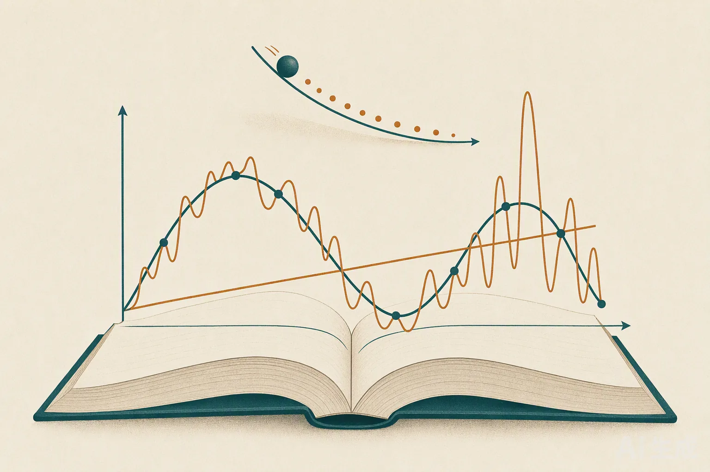

PROJECT 07 · 学习中
动手学深度学习 · 第一章实践
2026.09●《动手学深度学习》跟做●PyTorch 从零实现
我把李沐《动手学深度学习》第一章的每个基础模型都亲手实现了一遍：
线性回归（含手写的 SGD 训练循环）、Softmax 回归、多层感知机（MLP），
并在 FashionMNIST / MNIST 上训练。下面这个可交互的小演示，是我在学「模型复杂度与泛化」时做的——
拖动多项式的阶数，实时看欠拟合 → 恰好拟合 → 过拟合是怎么发生的。
3从零实现的基础模型
1000线性回归合成样本
256MLP 隐藏单元
10训练 epoch
真实写过的代码（节选）
线性回归：数据、模型、损失、以及手写的随机梯度下降更新，全部自己写，不调 nn.Linear。
# 手写模型与损失
def my_model(feature, w, b):
return feature @ w + b
def my_loss(y_hat, y):
return ((y_hat - y.reshape(y_hat.shape)) ** 2 / len(y)).sum()
# 手写 SGD：求梯度 → 更新参数 → 梯度清零
def sgd(feature, label, lr=0.03):
global w, b
y_hat = my_model(feature, w, b)
loss = my_loss(y_hat, label)
loss.backward()
with torch.no_grad():
w -= lr * w.grad
b -= lr * b.grad
w.grad.zero_(); b.grad.zero_()
多层感知机：手动声明两层权重 W1/b1、W2/b2，中间接 ReLU，在 FashionMNIST（784→256→10）上训练。
nums_inputs, nums_hiddens, nums_outputs = 784, 256, 10
W1 = nn.Parameter(torch.tensor(np.random.normal(0, 0.01, (nums_inputs, nums_hiddens)), dtype=torch.float))
b1 = nn.Parameter(torch.zeros(nums_hiddens, dtype=torch.float))
W2 = nn.Parameter(torch.tensor(np.random.normal(0, 0.01, (nums_hiddens, nums_outputs)), dtype=torch.float))
b2 = nn.Parameter(torch.zeros(nums_outputs, dtype=torch.float))
def net(X):
X = X.reshape((-1, nums_inputs))
H = relu(X @ W1 + b1) # 隐藏层
return H @ W2 + b2 # 输出层
这一章我真正搞懂了什么
- 「训练」的本质就是：定义损失 → 对参数求梯度 → 沿梯度反方向挪一小步，反复做。
- Softmax 把任意实数打分变成一组和为 1 的概率，交叉熵再把它变成可优化的分类损失。
- 模型容量、数据量、泛化三者是相互拉扯的——这也是上面那个演示想让人「一眼看到」的东西。
下一步
继续往《动手学深度学习》后面的章节推进（卷积神经网络、循环神经网络），把第一章打下的「从零实现」习惯保持下去，并与已有的手写数字 CNN、强化学习项目串成一条完整的学习路径。
PythonPyTorchNumPyMatplotlibFashionMNIST